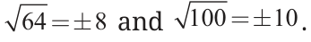
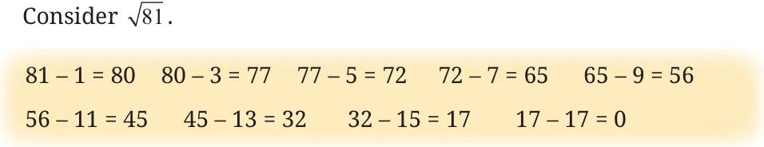

The area of a square is 49 sq. cm. What is the length of its side?
We know that \(7 \times 7 = 49\), or \(7^2 = 49\).

So, the length of the side of a square with an area of 49 sq. cm is 7 cm. We call 7 the square root of 49.
In general, if \(y = x^2\) then \(x\) is the square root of \(y\).
What is the square root of 64?
We know that \(8 \times 8\) is 64. So, 8 is the square root of 64. What about \(-8 \times -8\)? That is 64 too!
\(8^2 = 64\), and \((-8)^2 = 64\).
So, the square roots of 64 are \(+8\) and \(-8\).
Every perfect square has two integer square roots. One is positive and the other is negative. The square root of a number is denoted by \(\sqrt{\phantom{x}}\).
Thus, \(\sqrt{64} = \pm 8\) and \(\sqrt{100} = \pm 10\).

Note that \(\sqrt{8^2} = \pm 8\) and \(\sqrt{10^2} = \pm 10\). In general, \(\sqrt{n^2} = \pm n\).
In this chapter, we shall only consider the positive square root.
Given a number, such as 576 or 327, how do we find out if it is a perfect square? If it is a perfect square, how can we find its square root?
We know that perfect squares end in 1, 4, 9, 6, 5, or an even number of zeros. But, it is not certain that a number that satisfies this condition is a square.
We can clearly say that 327 is not a perfect square. However, we cannot be sure that 576 is a perfect square.
We can list all the square numbers in sequence and find out whether 576 occurs among them. We know that \(20^2 = 400\), we can find squares of 21, 22, 23, … and so on until we get 576 or a number greater than 576.
\(20^2 = 400\) \(21^2 = 441\) \(22^2 = 484\) \(23^2 = 529\) \(24^2 = 576\)
However, this process becomes inefficient for larger numbers.
Recall that every square can be expressed as a sum of consecutive odd numbers starting from 1.
Consider \(\sqrt{81}\).
\(81 - 1 = 80\) \(80 - 3 = 77\) \(77 - 5 = 72\) \(72 - 7 = 65\) \(65 - 9 = 56\)
\(56 - 11 = 45\) \(45 - 13 = 32\) \(32 - 15 = 17\) \(17 - 17 = 0\)

From 81, we successively subtracted consecutive odd numbers starting from 1 until we obtained 0 at the 9th step. Therefore \(\sqrt{81} = 9\).
Can we find the square root of 729 using this method? Yes, but it will be time-consuming.
We know that a perfect square is obtained by multiplying an integer by itself. Will looking at a number’s prime factorisation help in determining whether it is a perfect square?
Yes, if we can divide the prime factors of a number into two equal groups, then the product of the prime factors in either group combine to form the square root.
Is 324 a perfect square?
\(324 = 2 \times 2 \times 3 \times 3 \times 3 \times 3\).
These can be grouped as
\(324 = (2 \times 3 \times 3) \times (2 \times 3 \times 3)\).
\(= (2 \times 3 \times 3)^2 = 18^2\).
We can also write the prime factors in pairs. That is,
\(324 = (2 \times 2) \times (3 \times 3) \times (3 \times 3)\),
which shows that 324 is a perfect square. Thus,
\(324 = (2\times3\times3)^2 = 18^2\).
Therefore, \(\sqrt{324} = 18\).
Is 156 a perfect square?
The prime factorisation of 156 is \(2 \times 2 \times 3 \times 13\). We cannot pair up these factors. Therefore, 156 is not a perfect square.
Find whether 1156 and 2800 are perfect squares using prime factorisation.
We can estimate the square root of larger perfect squares by looking at the closest perfect squares we are familiar with and then narrowing down the interval to search.
For example, to find \(\sqrt{1936}\), we can reason as follows:
- 1936 is between \(1600\ (40^2)\) and \(2500\ (50^2)\), so \(40 < \sqrt{1936} < 50\).
- The last digit of 1936 is 6. So, the last digit of the square root must either be 4 or 6. It can be 44 or 46.
- If we calculate \(45^2\), we can compare it with 1936 to halve the interval to search from 40–50 to either 40–45 or 45–50.
We can write \(45^2\) as \((40 + 5)(40 + 5) = 40^2 + 2 \times 40 \times 5 + 5^2\)\(= 1600 + 400 + 25 = 2025\).
- \(2025 > 1936\). So, \(40 < \sqrt{1936} < 45\).
- From the observation in point (ii) we can guess and then verify that \(\sqrt{1936}\) is 44.
Consider the following situations —
Aribam and Bijou play a game. One says a number and the other replies with its square root. Aribam starts. He says 25, and Bijou quickly

responds with 5. Then Bijou says 81, and Aribam answers 9. The game goes on till Aribam says 250. Bijou is not able to answer because 250 is not a perfect square. Aribam asks Bijou if he can at least provide a number that is close to the square root of 250.
For this, Bijou needs to estimate the square root of 250.
We know that \(100 < 250 < 400\) and \(\sqrt{100} = 10\) and \(\sqrt{400} = 20\).
So, \(10 < \sqrt{250} < 20\).
But, we are still not very close to the number whose square is 250.
We know that \(15^2 = 225\) and \(16^2 = 256\).
Therefore, \(15 < \sqrt{250} < 16\). Since 256 is much closer to 250 than 225, \(\sqrt{250}\) is approximately 16. We also know it is less than 16.
Here is another problem that requires estimating square roots.
Akhil has a square piece of cloth of area 125 cm\(^2\). He wants to know if he can cut out a square handkerchief of side 15 cm. If not, he wants to know the maximum size handkerchief that can be cut out from this piece of cloth with an integer side length.
125 is not a perfect square. The nearest perfect squares are \(11^2 = 121\) and \(12^2 = 144\). So the largest square handkerchief with integer side length that can be cut out from this piece of cloth has side length 11 cm.